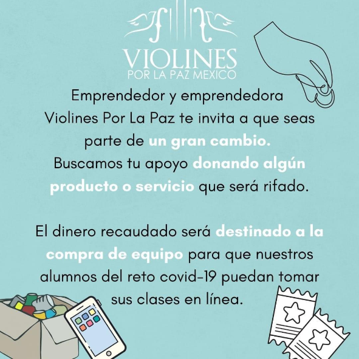
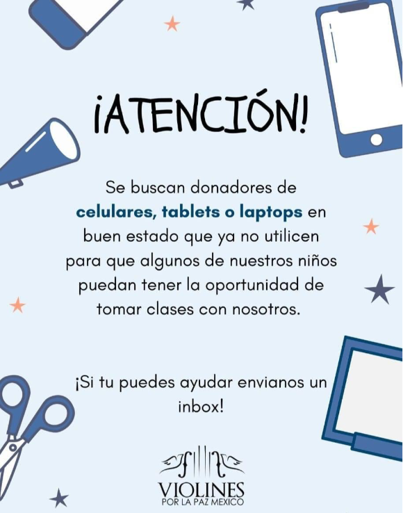
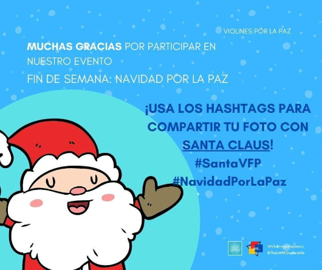

Campañas

Ayúdanos a formar parte de este gran cambio.
#VFP

¡Necesitamos tu ayuda!
Muchos de nuestros niños tienen dificultad para conectarse a las clases por la falta de equipo, si tienes un celular, tablet o laptop en buen estado contáctanos o ayúdanos compartiendo.
Campañas Pasadas

Gracias por estos días, nos llevamos una gran experiencia. Violines Por La Paz les desea felices fiestas. 🎅 🎁
#NavidadPorLaPaz
#QuedateEnCasa